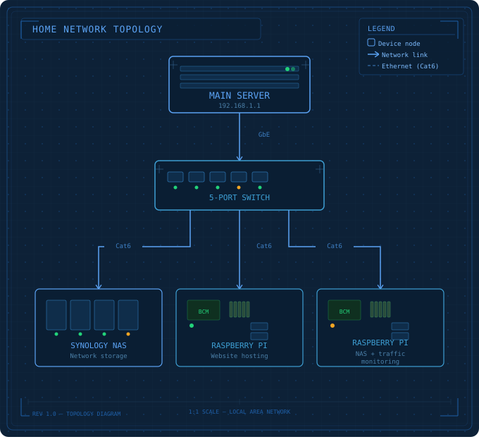

Purpose
The lab is designed to centralize experimentation. It supports safe testing for new services, network layouts, access controls, and operational workflows without risking production systems.
A self-hosted environment for testing infrastructure, networking, virtualization, and monitoring in a way that is practical, repeatable, and easy to expand. This page documents the topology and the role each layer plays in the lab.
The lab is designed to centralize experimentation. It supports safe testing for new services, network layouts, access controls, and operational workflows without risking production systems.
